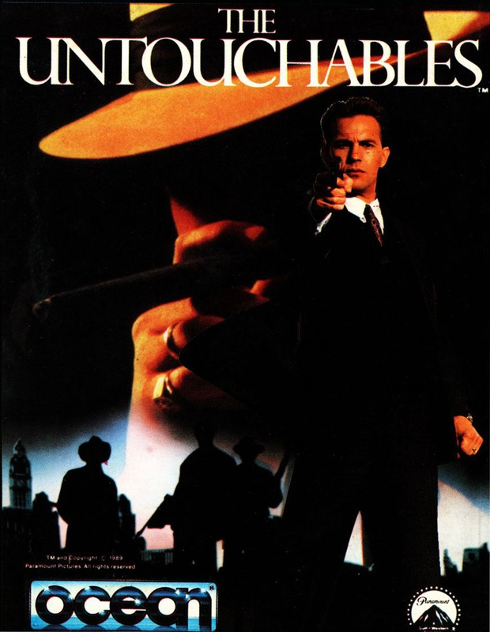
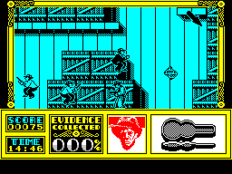

The Untouchables


{kind=link}

| Publisher: | Ocean |
| Price: | £9.99 Cass, £14.99 Disk |
| Year: | 1989 |
| Source: | CRASH, Issue 70 |

We’re back back in Twenties America under the iron heel of prohibition. This doesn’t stop gangster Al Capone producing and distributing illegal booze. Bribery and corruption rules a police force well paid to look the other way. But one Federal Agent is determined to form a group of officers above bribery, he’s Elliot Ness, they are... The Untouchables. Their mission: Get Capone.
The six level game is a belated tie-in of the movie that’s long done the rounds in video shops. Never mind, it’s great in its own right. Ness opens the game with an abortive raid on a Chicago warehouse suspected of holding illegal booze. A police department mole has tipped off the mob, and they’re waiting guns at the ready.

As you blast the baddies amongst the scattered crates, arrows appear which lead to one of ten white-suited men who possess useful information, shoot them to gain the info, but watch it: if one of the other guys gets it he turns white, and the chase is on again. Ten percent of the information is collected with each successful hit, but 100% is needed to complete the section. You start the game with a rifle, so pick up violin cases for machine guns; and roses for energy — you need as much as you can get.
Level two sees Ness and team at the US/Canadian border to stop a band of bootleggers from escaping. You start with Ness on the ground amidst parked trucks, avoiding the hiding gangsters’ bullets. His rifle with telescopic sights can pick off targets as they pop their heads round the trucks, using the cross hairs on screen upper right. He dodges bullets by rolling to the left or right. Alternatively, roll off the edge of the screen to select one of the other three Untouchables. Victory on this level gains the documents Ness needs to convict Capone.
Only Capone’s accountant can decipher them however. To stop Ness getting his hands on him, Capone bundles his hapless minion off to the station to catch a train out of town. In hot pursuit, Ness and Co are ambushed in an alleyway: Tommy gun blasting hoods in windows and cars. The usual shoot-out occurs to clear the scene for a race to the station. Switch from Ness to team members as before, but watch out: your double barreled shotgun needs constant reloading.
Survive this and it’s time get Ness down the station stairs while blasting the opposition and (to make things trickier) preventing an innocent baby in a pram from crashing to death.
Ness finally gets face to with Capone’s accountant. But one last cowardly hood is using him as a shield. It’s first person perspective shoot out time: kill the gangster without harming the accountant.
Capone is caught and charged with tax evasion. The trial sets off the final level with one of Capone’s henchmen making a bid for freedom. A good old-fashioned chase ensues, ending on the rooftop. Will Ness get his man? It’s up to you.
Great stuff. Ocean have brought Chicago to life. Atmospheric title tune (128K), beautifully detailed graphics and challenging gameplay add up to one addictive mean game!
MARK — 95%
You dirty rat, buy this game or it’s the big sleep for you, blue eyes. The Untouchables is graphically and sonically great and really gives you the impression of being there as Ness and his Untouchables run around shooting hoods, saving babies and above all putting Capone away for a very long time. With six sections the game is certainly large, and in all of them you blast away at villains with a variety of portable artillery (vicious swine). If you enjoyed the film take a look at the game, if not get it anyway!
NICK — 92%
RATING
A winning, large, action-packed shoot-out in an Untouchable class of its own.
| Presentation: | 90% |
| Graphics: | 83% |
| Sound: | 91% |
| Playability: | 91% |
| Addictivity: | 88% |
| Overall: | 94% |